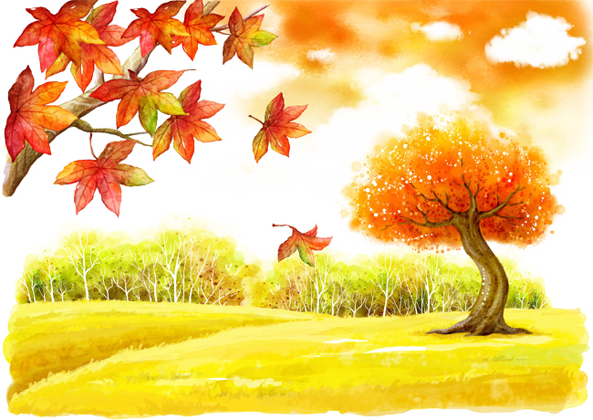

Réaliser l'avenir seulement par des efforts continus

Né dans une petite ville, j'ai eu de nombreuses carrières, policier, homme d'affaires...
Courageux, droit, fort...
Maintenant étudiant en développement logiciel. Apprendre est comme une mission, se défier constamment.
Douloureux et heureux, comme un démon, continuer à avancer vers le défi.
Développement logiciel
Collège Vanier
Affaires
Saskatchewan Polytechnic
En repensant aux décennies de mon parcours académique dans la première moitié de ma vie,
je n'ai jamais été aussi assidu. Au cours de ces six mois depuis mon retour à l'université,
je suis passé d'un étudiant en informatique sans aucune base à être capable de développer
indépendamment des logiciels simples. Il y a eu de nombreux défis, y compris de longues heures d'étude,
l'autodiscipline, la persévérance et la résilience. J'ai maintenant terminé trois projets et
le quatrième est en cours. Mon histoire continue.